전기기능장 (2015-04-04 기출문제)
1과목: 임의구분
1. ø =ømsinwt(Wb)인 정현파로 변화하는 자속이 권수 N인 코일과 쇄교할 때의 유기 기전력의 위상은 자속에 비해 어떠한가?
- π/2만큼 빠르다.
- π/2만큼 느리다.
- π만큼 빠르다.
- 동위상이다.
(정답률: 78%)

2. 단상 반파 위상제어 정류회로에서 220V, 60㎐의 정현파 단상 교류전압을 점호각 60°로 반파 정하고자 한다. 순저항 부하시 평균전압은 약 몇 V 인가?
- 74
- 84
- 92
- 110
(정답률: 52%)
3. 컴퓨터의 중앙처리장치에서 연산의 결과나 중간값을 일시적으로 저장해 두는 레지스터는?
- 메모리주소 레지스터
- 누산기
- 상태 레지스터
- 인덱스 레지스터
(정답률: 65%)
4. 동기발전기의 권선을 분포권으로 하면?
- 난조를 방지한다.
- 파형이 좋아진다.
- 권선의 리액턴스가 커진다.
- 집중권에 비하여 합성유도 기전력이 높아진다.
(정답률: 79%)
5. 60㎐, 4극, 3상 유도전동기의 슬립이 4%라면 회전수는 몇 rpm 인가?
- 1690
- 1728
- 1764
- 1800
(정답률: 86%)
6. 인버터의 스위칭 소자와 역병렬 접속된 다이오드에 관한 설명으로 옳은 것은?
- 스위칭 소자에 걸리는 전압을 정류하기 위한 것이다.
- 부하에서 전원으로 에너지가 회생될 때 경로가 된다.
- 스위칭 소자에 걸리는 전압 스트레스를 줄이기 위한 것이다.
- 스위칭 소자의 역방향 누설전류를 흐르게 하기 위한 경로이다.
(정답률: 71%)
7. 셀룰라덕트 및 부속품은 제 몇 종 접지공사를 하여야 하는가?
- 제1종 접지공사
- 제2종 접지공사
- 제3종 접지공사
- 특별 제3종 접지공사
(정답률: 87%)
8. RLC 직렬회로에서 L 및 C의 값을 고정시켜 놓고 저항 R의 값만 큰 값으로 변화시킬 때 올바르게 설명한 것은?
- 공진 주파수는 커진다.
- 공진 주파수는 작아진다.
- 공진 주파수는 변화하지 않는다.
- 이 회로의 양호도 Q는 커진다.
(정답률: 81%)
9. 3상 권선형 유도전동기의 2차 회로에 저항을 삽입하는 목적이 아닌 것은?
- 속도 제어를 하기 위하여
- 기동 토크를 크게 하기 위하여
- 기동 전류를 줄이기 위하여
- 속도는 줄어지지만 최대 토크를 크게 하기 위하여
(정답률: 67%)
10. 2진 데이터를 저장하기 위해 사용되는 일종의 메모리는?
- 데이터버스
- 타이머
- 카운터
- 레지스터
(정답률: 74%)
11. 2개의 단상 변압기(220/6000V)를 그림과 같이 연결하여 최대 사용전압 6600V의 고압전동기의 권선과 대지사이의 절연내력시험을 하는 경우 입력전압(V)과 시험전압(E)은 각각 얼마로 하면 되는가?
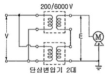
- V=137.5V, E=8250V
- V=165V, E=9900V
- V=200V, E=12000V
- V=220V, E=13200V
(정답률: 78%)
12. 진상용 고압 콘덴서에 방전 코일이 필요한 이유는?
- 역률 개선
- 전압 강하의 감소
- 잔류 전하의 방전
- 낙뢰로부터 기기 보호
(정답률: 86%)
13. 일정시간이 지나면 기억된 내용이 지워지기 때문에 소생(refresh)이 필요한 메모리 소자는?
- ROM
- SRAM
- DRAM
- PROM
(정답률: 52%)
14. 100V, 25W와 100V, 50W의 전구 2개가 있다. 이것을 직렬로 접속하여 100V의 전압을 인가하였을 때 두 전구의 합성저항은 몇 Ω인가?
- 150
- 200
- 400
- 600
(정답률: 76%)
15. 0.6/1kV 비닐절연 비닐시스 제어케이블의 약호로 옳은 것은?
- VCT
- CVV
- NFI
- NRI
(정답률: 76%)
16. 정현파 교류의 실효값을 계산하는 식은? (단, T는 주기이다.)
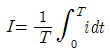
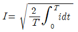
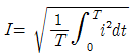
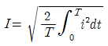
(정답률: 84%)
17. 2개의 전하 Q1(C)과 Q2(C)를 r(m)의 거리에 놓았을때 작용하는 힘의 크기를 옳게 설명한 것은?
- Q1,Q2의 곱에 비례하고 r에 반비례한다.
- Q1,Q2의 곱에 반비례하고 r에 비례한다.
- Q1,Q2의 곱에 반비례하고 r의 제곱에 비례한다.
- Q1,Q2의 곱에 비례하고 r에 제곱에 반비례한다.
(정답률: 77%)
18. 2진수 (1111101011111010)2를 16진수로 변환한 값은?
- (FAFA)16
- (EAEA)16
- (FBFB)16
- (AFAF)16
(정답률: 81%)
19. 4극 직류 분권전동기의 전기자에 단중 파권 권선으로된 420개의 도체가 있다. 1극당 0.025Wb의 자속을 가지고 1400rpm으로 회전시킬 때 발생되는 역기전력과 단자전압은? (단, 전기자 저항 0.2Ω, 전기자전류는 50A이다.)
- 역기전력 : 490V, 단자전압 : 500V
- 역기전력 : 490V, 단자전압 : 480V
- 역기전력 : 245V, 단자전압 : 500V
- 역기전력 : 245V, 단자전압 : 480V
(정답률: 71%)
20. 20극, 360rpm의 3상 동기 발전기가 있다. 전 슬롯수180, 2층권 각 코일의 권수 4, 전기자 권선은 성형이며, 단자 전압이 6600V인 경우 1극의 자속(Wb)은 얼마인가? (단, 권선계수는 0.9이다.)
- 0.0375
- 0.0662
- 0.3751
- 0.6621
(정답률: 61%)
2과목: 임의구분
21. 동기형 RS플립플롭을 이용한 동기형 J-K플립플롭에서 동작이 어떻게 개선되었는가?
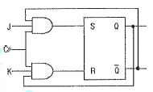
- J=1, K=1, CP=0 일 때 Qn
- J=0, K=0, CP=1 일 때 Qn
- J=1, K=1, CP=1 일 때
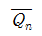
- J=0, K=0, CP=0 일 때 Qn
(정답률: 66%)
22. 코일에 단상 100V의 전압을 가하면 30A의 전류가 흐르고 1.8kW의 전력을 소비한다고 한다. 이 코일과 병렬로 콘덴서를 접속하여 회로의 합성역률을 100%로 하기 위한 용량 리액턴스는 약 몇 Ω이면 되는가?
- 2.32
- 3.24
- 4.17
- 5.28
(정답률: 59%)
23. 다음 전력계통의 기기 중 절연 레벨이 가장 낮은 것은?
- 피뢰기
- 애자
- 변압기 부싱
- 변압기 권선
(정답률: 87%)
24. 주상변압기를 설치할 때 작업이 간단하고 장주하는데 재료가 덜 들어서 좋으나 전주 윗부분에는 무게가 가하여지므로 보통 20~30kVA 정도의 변압기에 널리 쓰이는 방법은?
- 변압기 거치법
- 행거 밴드법
- 변압기 탑법
- 앵글 지지법
(정답률: 89%)
25. 변압기의 정격을 정의한 것으로 가장 옳은 것은?
- 2차 단자 간에서 얻을 수 있는 유효전력을 kW로 표시 한 것이 정격 출력이다.
- 정격 2차 전압은 명판에 기재되어 있는 2차 권선의 단자 전압이다.
- 정격 2차 전압을 2차 권선의 저항으로 나눈 것이 2차 전류이다.
- 전부하의 경우는 1차 단자 전압을 정격 1차 전압이라 한다.
(정답률: 81%)
26. 동일 정격의 다이오드를 병렬로 연결하여 사용하면?
- 역전압을 크게 할 수 있다.
- 순방향 전류를 증가시킬 수 있다.
- 절연효과를 향상시킬 수 있다.
- 필터 회로가 불필요하게 된다.
(정답률: 83%)
27. 바닥통풍형, 바닥밀폐형 또는 두 가지 복합 채널형 구간으로 구성된 조립금속 구조로 폭이 150㎜ 이하이며, 주케이블 트레이로부터 말단까지 연결되어 단일 케이블을 설치하는데 사용하는 케이블트레이는?
- 사다리형
- 트로프형
- 일체형
- 통풍채널형
(정답률: 86%)
28. 진리표와 같은 입력조합으로 출력이 결정되는 회로는?
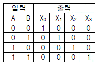
- 인코더
- 디코더
- 멀티플렉서
- 카운터
(정답률: 75%)
29. 다음 회로의 명칭은?
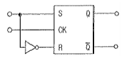
- D 플립플롭
- T 플립플롭
- J-K 플립플롭
- R-S 플립플롭
(정답률: 69%)
30. 논리회로가 뜻하는 논리게이트의 명칭은?
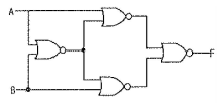
- EX-NOR
- EX-OR
- INHIBIT
- OR
(정답률: 60%)
31. 주택, 기숙사, 여관, 호텔, 병원, 창고 등의 옥내배선 설계에 있어서 간선의 굵기를 선정할 때 전등 및 소형 전기기계기구의 용량합계가 10kVA를 초과하는 것은 그 초과량에 대하여 수용률을 몇 %로 적용할 수 있도록 규정하고 있는가?
- 30
- 50
- 70
- 100
(정답률: 68%)
32. 사이리스터의 턴오프에 관한 설명이다. 가장 적합한 것은?
- 사이리스터가 순방향 도전상태에서 역방향 저지상태로 되는 것
- 사이리스터가 순방향 도전상태에서 순방향 저지상태로 되는 것
- 사이리스터가 순방향 저지상태에서 역방향 도전상태로 되는 것
- 사이리스터가 순방향 저지상태에서 순방향 도전상태로 되는 것
(정답률: 68%)
33. 특정 전압 이상이 되면 ON 되는 반도체인 바리스터의 주된 용도는?
- 온도 보상
- 전압의 증폭
- 출력전류의 조절
- 서지전압에 대한 회로보호
(정답률: 90%)
34. 다음 ( ) 안의 알맞은 내용으로 옳은 것은?
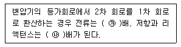
- ㉮ 1/a, ㉯ a2
- ㉮ 1/a, ㉯ a
- ㉮ a2, ㉯ 1/a
- ㉮ a2, ㉯ a
(정답률: 73%)
35. 금속(후강)전선관 22mm를 90°로 굽히는데 소요되는 최소길이(mm)는 약 얼마이면 되는가? (단, 곡률반지름 r≥6d로 한다.)
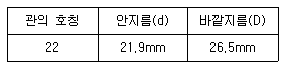
- 145
- 228
- 245
- 268
(정답률: 63%)
36. 34극, 60MVA, 역률 0.8, 60㎐, 22.9kV 수차 발전기의 전부하 손실이 1600kW이면 전부하 효율은 약 몇 %인가?
- 92.4%
- 94.6%
- 96.8%
- 98.2%
(정답률: 67%)
37. 변압기의 여자전류와 철손을 구할 수 있는 시험은?
- 부하시험
- 무부하시험
- 유도시험
- 단락시험
(정답률: 87%)
38. 3상 유도전동기의 설명으로 틀린 것은?
- 전부하 전류에 대한 무부하 전류의 비는 용량이 작을수록 극수가 많을수록 크다.
- 회전자 속도가 증가할수록 회전자측에 유기되는 기전력은 감소한다.
- 회전자 속도가 증가할수록 회전자 권선의 임피던스는 증가한다.
- 전동기의 부하가 증가하면 슬립은 증가한다.
(정답률: 57%)
39. R=40Ω, L=80mH의 코일이 있다. 이 코일에 220V, 60㎐의 전압을 가할 때 소비되는 전력은 약 몇 W인가?
- 79
- 581
- 771
- 1352
(정답률: 58%)
40. CPU가 어떤 작업을 하던 중에 외부로부터의 요구가 있으면 그 작업을 잠시 중단하고 요구된 일을 처리한 후에 다시 원래의 작업으로 되돌아오는 기능은?
- DMA(Direct memory access)
- Subroutine
- Interrupt
- Time sharing
(정답률: 54%)
3과목: 임의구분
41. 가공 전선로에서 전선의 단위 길이당 중량과 경간이 일정 할 때 이도는 어떻게 되는가?
- 전선의 장력에 비례한다.
- 전선의 장력에 반비례한다.
- 전선의 장력의 제곱에 비례한다.
- 전선의 장력의 제곱에 반비례한다.
(정답률: 62%)
42. 전로의 중성점을 접지하는 목적에 해당되지 않는 것은?
- 보호 장치의 확실한 동작 확보
- 대지 전압의 저하
- 이상 전압의 억제
- 부하 전류의 일부를 대지로 흐르게 함으로서 전선의 절약
(정답률: 83%)
43. 직류를 교류로 변환하는 장치이며, 상용 전원으로부터 공급된 전력을 입력받아 자체 내에서 전압과 주파수를 가변시켜 전동기에 공급함으로서 전동기 속도를 고효율로 용이하게 제어하는 장치를 무엇이라고 하는가?
- 컨버터
- 인버터
- 초퍼
- 변압기
(정답률: 87%)
44. 저압 옥내간선과의 분기점에서 전선의 길이가 몇 m이하인 곳에 원칙적으로 개폐기 및 과전류 차단기를 시설하여야 하는가?
- 3
- 4
- 5
- 8
(정답률: 84%)
45. 제1종 접지공사 및 제2종 접지공사에 사용하는 접지선을 철주 및 기타의 금속체를 따라서 시설하는 경우에는 접지극을 지중에서 그 금속체로부터 몇 ㎝ 이상 떼어 매설하여야 하는가? (단, 사람이 접촉할 우려가 있는 곳에 시설하는 경우이다.)
- 150
- 125
- 100
- 75
(정답률: 77%)
46. 마이크로프로세서 중 16비트(Bit)의 시스템이 아닌 것은?
- 인텔 8086
- 모토롤라 68000
- 자이로그 Z8000
- 인텔 8085
(정답률: 50%)
47. 동기 전동기의 위상특성 곡선에 대하여 옳게 표현한 것은? (단, P : 출력, If : 계자전류, E : 유도기전력, Ia : 전기자 전류, cosθ: 역률이다.)
- P-If곡선, Ia일정
- P-If곡선, If일정
- If-E곡선, cosθ일정
- If-Ia곡선, P일정
(정답률: 68%)
48. 전가산기의 입력변수가 x, y, z 이고, 출력함수가 S, C 일 때 출력의 논리식으로 옳은 것은?
- S=(x⊕=)y⊕z, C=xyz
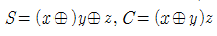
- S=(x⊕=)y⊕z, C=(x⊕ y)z
- S=(x⊕=)y⊕z, C=xy+(x⊕y)z
(정답률: 59%)
49. 그림과 같이 내부저항 0.1Ω, 최대지시 1A의 전류계 에 분류기 R를 접속하여 측정범위를 15A로 확대하려면 R의 저항값은 몇 Ω으로 하면 되는가?
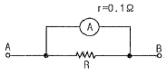
- 1/150
- 1/140
- 1.4
- 1.5
(정답률: 70%)
50. 3상 발전기의 전기자 권선에 Y결선을 채택하는 이유로 볼 수 없는 것은?
- 상전압이 낮기 때문에 코로나, 열화 등이 적다.
- 권선의 불균형 및 제3고조파 등에 의한 순환전류가 흐르지 않는다.
- 중성점 접지에 의한 이상 전압 방지의 대책이 쉽다.
- 발전기 출력을 더욱 증대할 수 있다.
(정답률: 87%)
51. 송배전 계통에 사용되는 보호계전기의 반한시 특성이란?
- 동작 전류가 커질수록 동작시간이 길어진다.
- 동작 전류가 작을수록 동작시간이 짧다.
- 동작 전류에 관계없이 동작시간은 일정하다.
- 동작 전류가 커질수록 동작시간은 짧아진다.
(정답률: 71%)
52. 자속밀도 1Wb/m2인 평등 자계의 방향과 수직으로 놓인 50㎝의 도선을 자계와 30°방향으로 40m/s의 속도로 움직일 때 도선에 유기되는 기전력은 몇 V인가?
- 5
- 10
- 20
- 40
(정답률: 64%)
53. 극판의 면적이 10cm2, 극판간의 간격이 1㎜, 극판간에 채워진 유전체의 비유전율 Es=2.5인 평행판 콘덴서에 100V의 전압을 가할 때 극판의 전하량은 몇 nC인가?
- 0.6
- 1.2
- 2.2
- 4.4
(정답률: 49%)
54. 그림의 파형이 나타날 수 있는 소자는? (단, vS는 입력전압, iG는 게이트 전류, vO는 출력전압이다.)
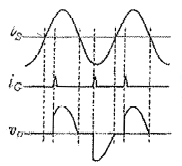
- GTO
- SCR
- DIODE
- TRIAC
(정답률: 70%)
55. 생산보전(PM:productive maintenance)의 내용에 속하지 않는 것은?
- 보전예방
- 안전보전
- 예방보전
- 개량보전
(정답률: 67%)
56. 모든 작업을 기본동작으로 분해하고, 각 기본 동작에 대하여 성질과 조건에 따라 미리 정해놓은 시간치를 적용하여 정미시간을 산정하는 방법은?
- PTS법
- Work Sampling법
- 스톱워치법
- 실적자료법
(정답률: 83%)
57. 관리도에서 측정한 값을 차례로 타점했을 때 점이 순차적으로 상승하거나 하강하는 것을 무엇이라 하는가?
- 연(run)
- 주기(cycle)
- 경향(trend)
- 산포(dispersion)
(정답률: 79%)
58. 품질특성을 나타내는 데이터 중 계수치 데이터에 속하는 것은?
- 무게
- 길이
- 인장강도
- 부적합품률
(정답률: 85%)
59. 어떤 공장에서 작업을 하는데 있어서 소요되는 기간과 비용이 다음 [표]와 같을 때 비용구배는 얼마인가? (단, 활동시간의 단위는 일(日)로 계산한다.)
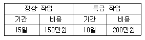
- 50,000원
- 100,000원
- 200,000원
- 500,000원
(정답률: 81%)
60. 200개 들이 상자가 15개 있을 때 각 상자로부터 제품을 랜덤하게 10개씩 샘플링 할 경우, 이러한 샘플링 방법을 무엇이라 하는가?
- 층별 샘플링
- 계통 샘플링
- 취락 샘플링
- 2단계 샘플링
(정답률: 79%)